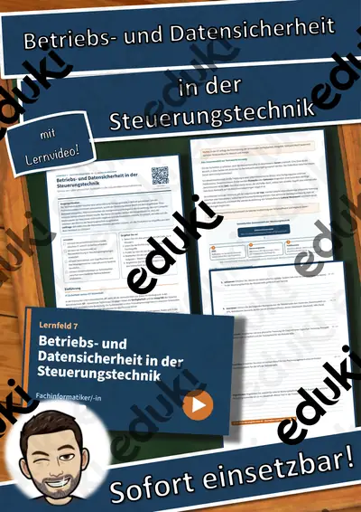
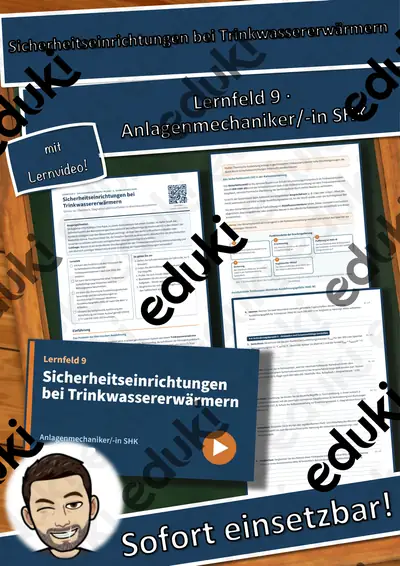
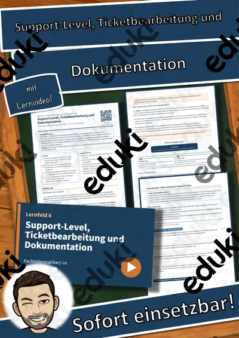
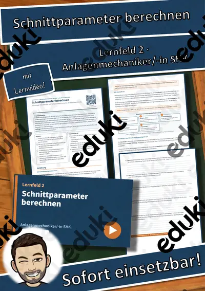
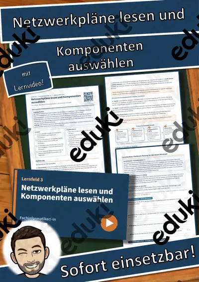

LF 10 Kfz-Mechatroniker/-in: Achsvermessung und Fahrwerksdiagnose – Übungen, Lösungen + Lernvideo
Achsvermessung und Fahrwerksdiagnose – Sicherheit und Fahrstabilität durch präzise Einstellung
Für den Berufsschulunterricht im Ausbildungsberuf Kraftfahrzeugmechatroniker/-in, Lernfeld 10 „Schäden an Fahrwerks- und Bremssystemen instand setzen“ (3. Ausbildungsjahr).
Das steckt drin (7 Seiten):
- Einstieg mit realistischer Ausgangssituation und Leitfrage
- Einführung als Sachtext auf Berufsschulniveau mit Merkekästen
- Schaubild und Fachbegriffe-Tabelle
- handlungsorientierte Lernsituation mit Materialien
- 12 Aufgaben nach Anforderungsbereichen (I: 4, II: 5, III: 3) mit Punkten und Sozialform
- Selbstcheck, Prüfungstipp und Notenorientierung
- ausführliche Lösungen auf eigenen Seiten
- QR-Code zum passenden Lernvideo (ca. 3–6 Minuten, mit Untertiteln)Lernziele:
- Ich kann die drei wesentlichen Winkel der Achsgeometrie benennen und beschreiben.
- Ich kann Verschleißbilder an Reifen den entsprechenden Ursachen in der Achsgeometrie zuordnen.
- Ich kann Messwerte aus einem Protokoll interpretieren und die Notwendigkeit von Korrekturen beurteilen.
- Ich kann die Auswirkungen fehlerhafter Achswerte auf das Fahrverhalten und die Bauteile erklären.
Alle Betriebe, Personen und Fälle sind frei erfunden, alle Grafiken eigene Darstellungen. Sofort einsetzbar im Unterricht, für Vertretungsstunden, zur Prüfungsvorbereitung und zum selbstständigen Lernen.
FachTechnik (BS)
Klasse–
SchulformBerufsschule
MaterialartArbeitsblätter, Prüfungsvorbereitung
Ähnliche Materialien

LF 6 Industriemechaniker/-in: Pneumatische Schaltpläne und Zylinderschaltungen – Übungen, Lösungen + Lernvideo

LF 7 Fachinformatiker/-in: Betriebs- und Datensicherheit in der Steuerungstechnik – Übungen, Lösungen + Lernvideo

LF 9 Anlagenmechaniker/-in SHK: Sicherheitseinrichtungen bei Trinkwassererwärmern – Übungen, Lösungen + Lernvideo

LF 6 Fachinformatiker/-in: Support-Level, Ticketbearbeitung und Dokumentation – Übungen, Lösungen + Lernvideo

Lernfeld 2 Anlagenmechaniker/-in SHK: Schnittparameter berechnen – Einführung, Übungen, Lösungen + Lernvideo

LF 3 Fachinformatiker/-in: Netzwerkpläne lesen und Komponenten auswählen – Übungen, Lösungen + Lernvideo

LF 6 Anlagenmechaniker/-in SHK: Gefälle und Fließgeschwindigkeit in Entwässerungsleitungen – Übungen, Lösungen + Lernvid